A place in the circle
Jane listens in a warm community jam. Zephrine connects with her friend. A continuous timber interior joins Beat Kitchen upstairs to Borelli’s behind the freestanding portal.
Functional verification covers desktop and fresh portrait-phone entry, both post routes, return without camera jumps, collisions, controls and cleanup. These captures separately document artistic inspection; they do not establish photographic likeness or physical iPhone performance.
Contact probes use actual exported geometry. Seated listening hands and chair support are fitted to posed surfaces. Fretting and supporting hands are checked separately from fingertips suspended between strums. Fine professional playing technique and generic supporting likenesses remain stylized.
Reviewed model: 843eb10217d0d7b201fb5c5a20e954c777a69795aa0184fc0616fdae2a6dabe3
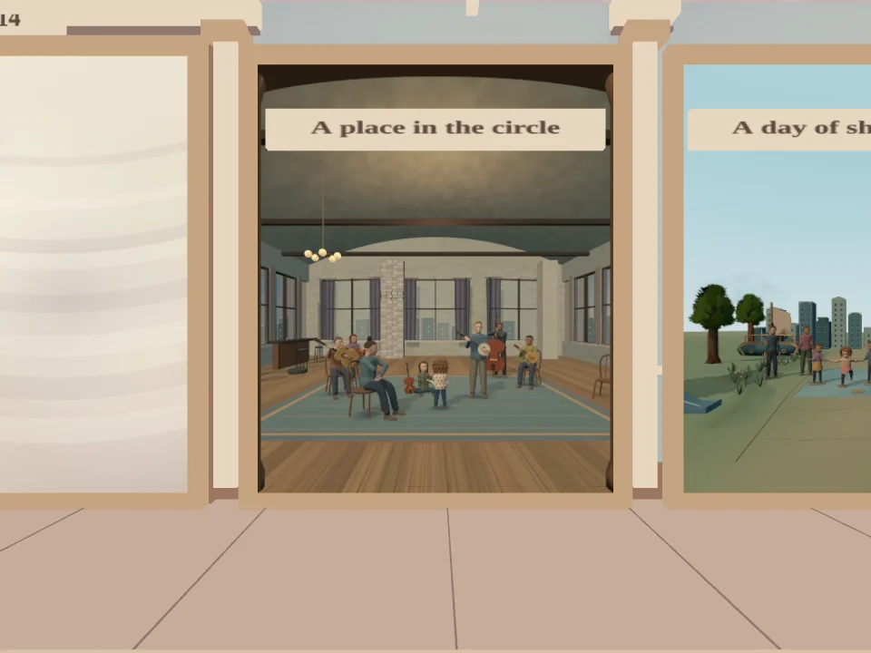
The hallway painting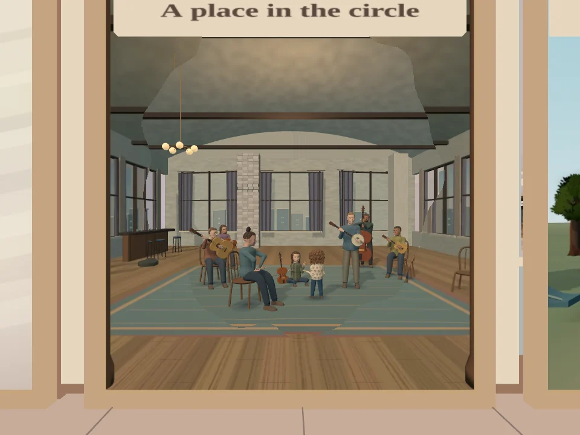
Partial reveal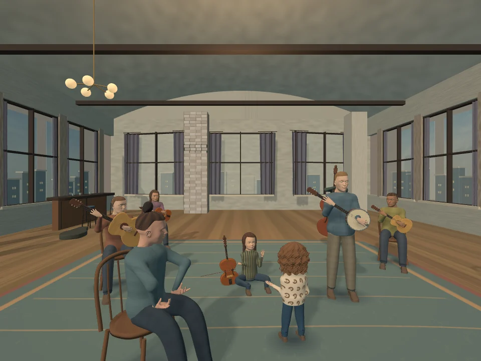
Beat Kitchen upstairs on entry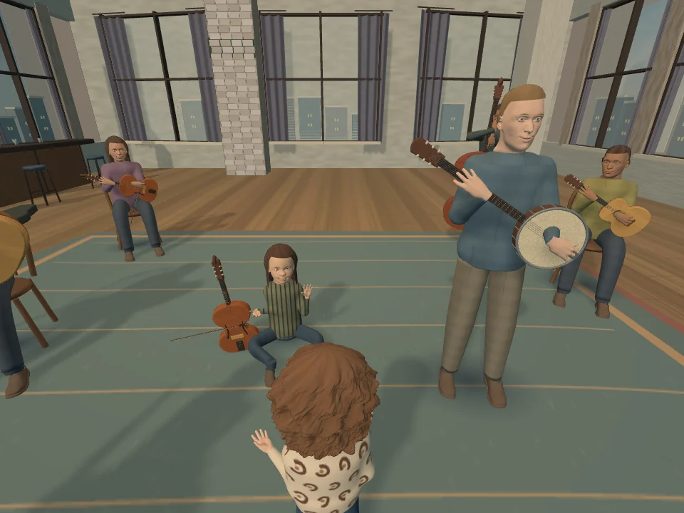
Zephrine meets her striped-shirt friend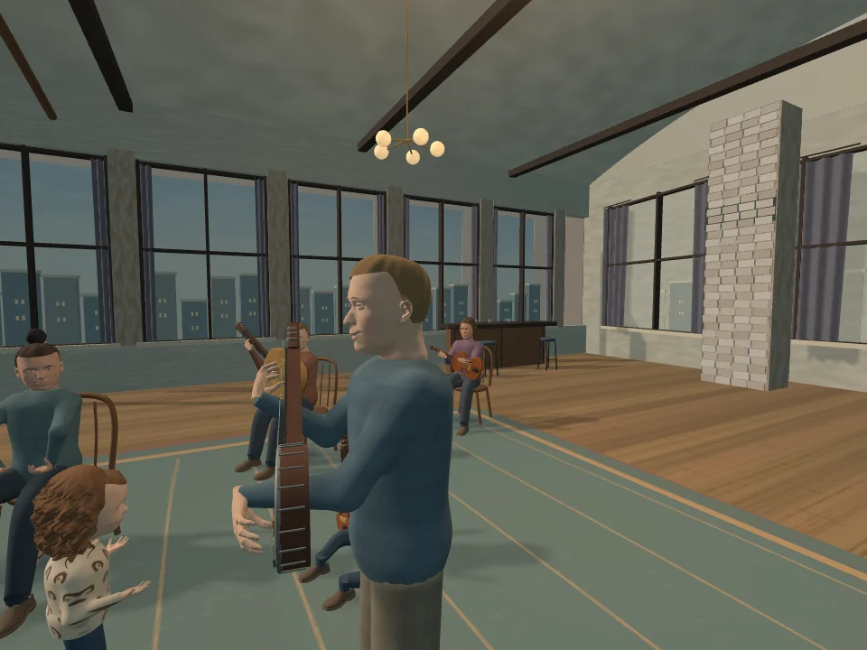
Jonas, banjo and the circle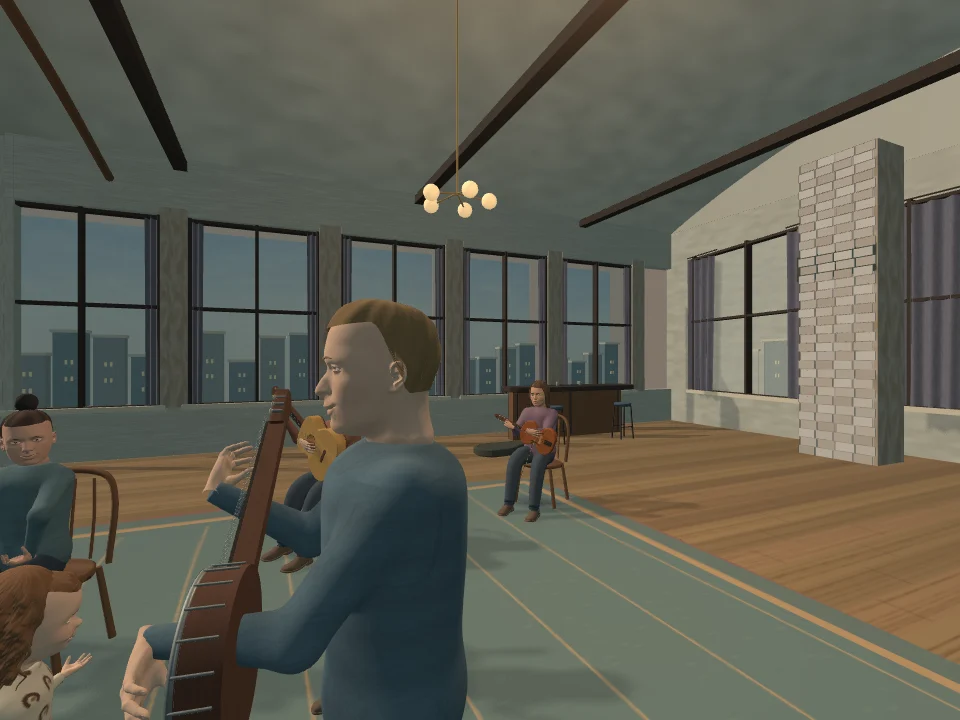
Dimensional cast and instruments in profile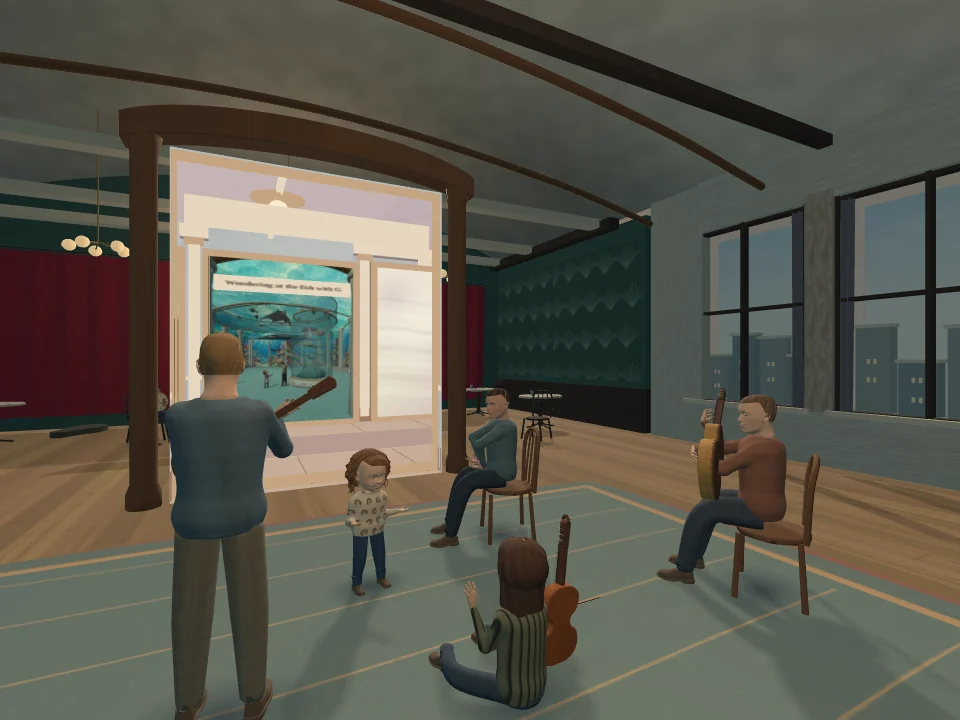
The back of the principal arrangement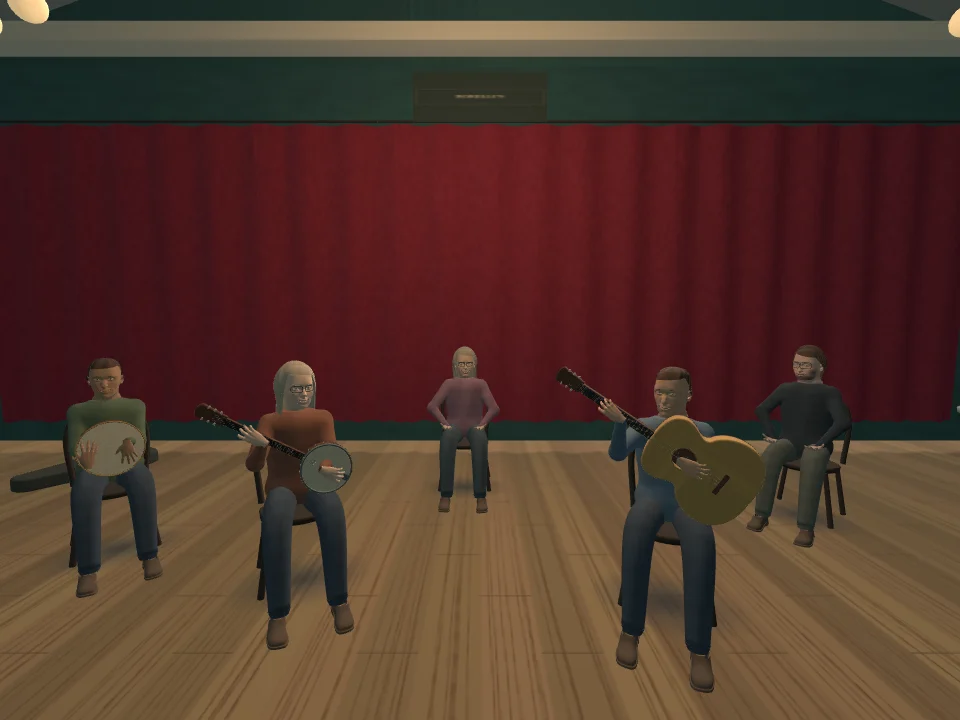
Borelli’s behind the portal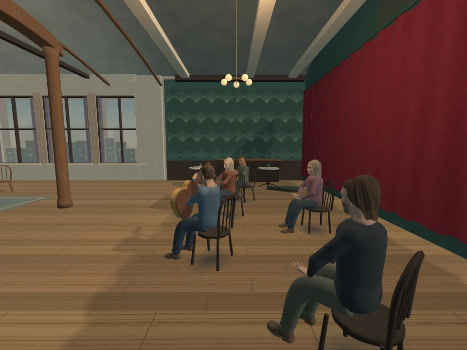
The rear venue from its side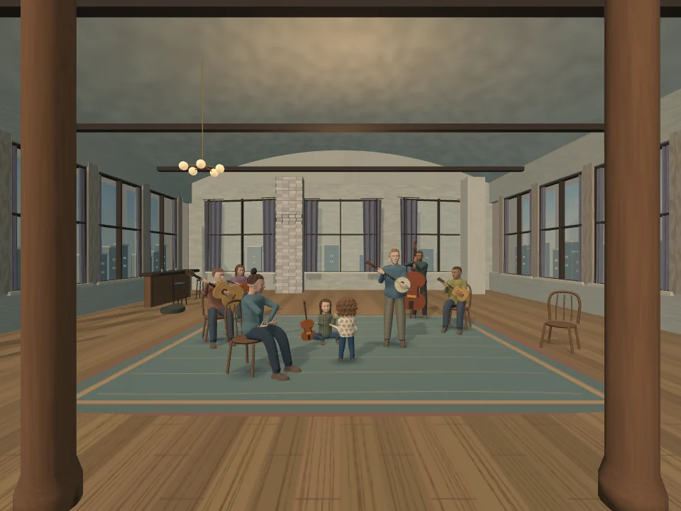
The return portal from behind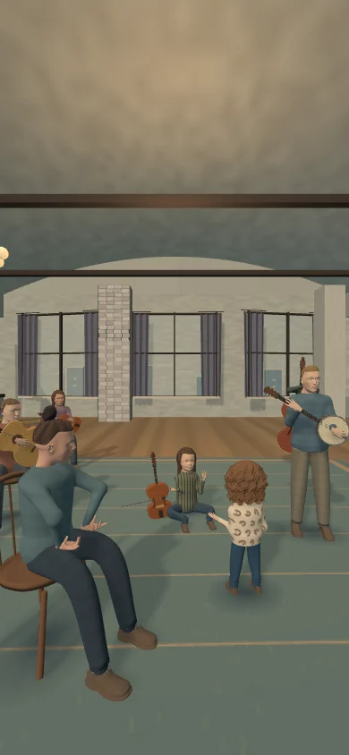
A fresh portrait-phone load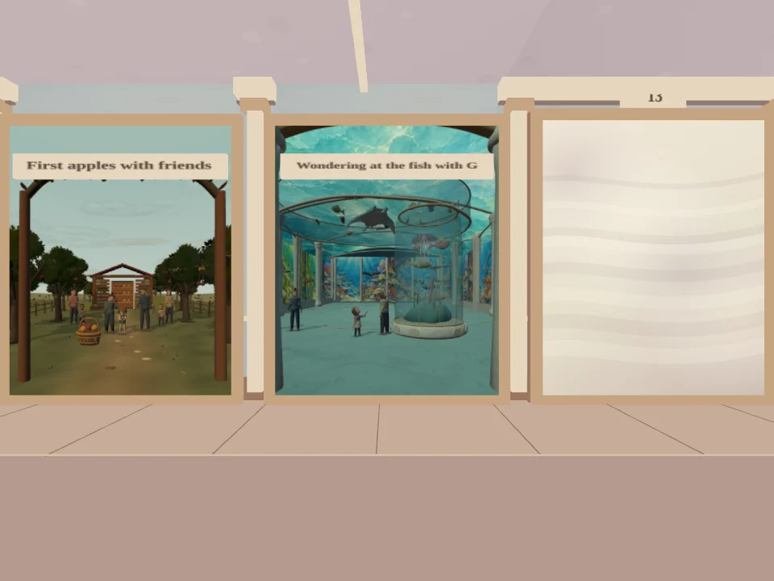
The actual hallway on returnModel hashes and verification records